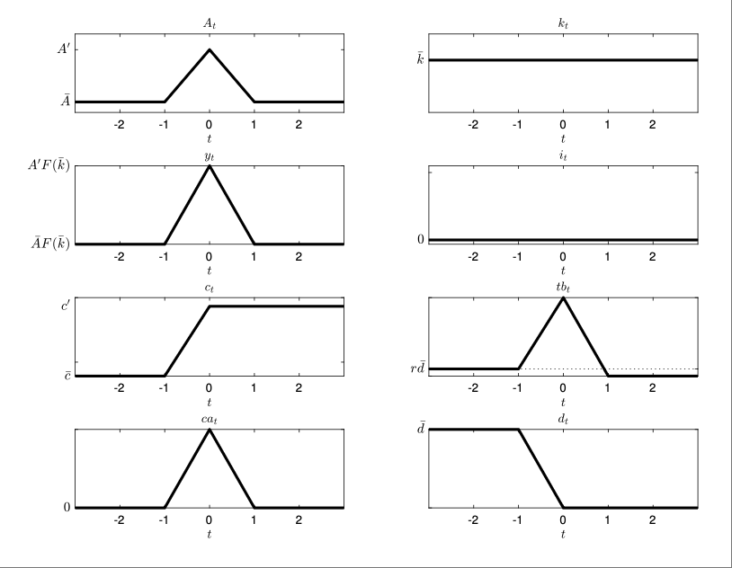

Exercise 3.3
Adjustment Costs and Temporary Technology Shocks
Problem
In the economy with adjustment cost studied in section 3.5, characterize the dynamics triggered by a purely temporary positive technology shock. Specifically, assume that before the shock the economy is in a steady state with capital, debt, and productivity constant at \(\bar{k}\), \(\bar{d}\), and \(\bar{A}\), respectively. Assume that in period 0, unexpectedly, \(A_t\) increases to \(A' > \bar{A}\), and returns permanently to \(\bar{A}\) in period 1.
Answer
Adjustment is the same as in the economy without capital adjustment costs because there is no reason to adjust the capital stock, which in turn is the same as the adjustment to a purely temporary endowment shock studied in Chapter 2.
Experiment: In period 0 it is learned that \(A_0 = A' > A_{-1} = \bar{A}\) and that \(A_t = \bar{A}\) for all \(t > 0\).
\[ A_t = \begin{cases} \bar{A} & t \leq -1 \\ A' > \bar{A} & t = 0 \\ \bar{A} & t > 0 \end{cases} \]
By (3.12)
\[ k_{t+1} = \kappa\left( \frac{A_{t+1}}{r} \right) = \kappa\left( \frac{\bar{A}}{r} \right) = \bar{k}, \quad \text{for all } t \geq 0 \]
By (3.4)
\[ i_t = k_{t+1} - k_t = \bar{k} - \bar{k} = 0, \quad \text{for all } t \geq 0 \]
By (3.3)
\[ y_0 = A' F(\bar{k}) > \bar{y}, \quad \text{and} \quad y_t = \bar{y} = \bar{A} F(\bar{k}), \quad \text{for all } t > 0 \]
Note: same as the adjustment to a purely temporary endowment shock in the endowment economy of Chapter 2.
By (3.11)
\[ c_t = c_0, \quad \text{for all } t \geq 0 \]
By (3.13)
\[ \begin{aligned} c_0 &= -rd_{-1} + y_0^p = -rd_{-1} + \frac{r}{1 + r} \sum_{t=0}^{\infty} \frac{A_t F(k_t) - (k_{t+1} - k_t)}{(1 + r)^t} \\ &= -rd_{-1} + \frac{r}{1 + r} \left[ \sum_{t=0}^{\infty} \frac{\bar{A} F(\bar{k})}{(1 + r)^t} + \frac{1}{1 + r}(A' F(\bar{k}) - \bar{A} F(\bar{k})) \right]\\ &= -rd_{-1} + \bar{A}F(\bar{k}) + \frac{r}{1 + r} \left( A'F(\bar{k}) - \bar{A}F(\bar{k}) \right)\\ &= c_{-1} + \frac{r}{1 + r} \left( A'F(\bar{k}) - \bar{A}F(\bar{k}) \right) > c_{-1} \end{aligned} \]
Thus consumption increases by only a small fraction of the increase in current income.
Adjustment of the Trade Balance
From the definition of the trade balance we have
\[ tb_0 - tb_{-1} = (y_0 - y_{-1}) - (c_0 - c_{-1}) - (i_0 - i_{-1}) = \frac{1}{1 + r} (y_0 - y_{-1}) > 0 \]
\(\Rightarrow\) procyclical trade balance adjustment in period 0.
For \(t > 0\): \(c_t\), \(y_t\), \(i_t\) are all constant. Hence \(tb_t\) is also constant.
At what level? By same argument as above
\[ tb_t = tb' = rd_0; \quad \text{and} \quad d_t = d_0; \quad \forall t > 0 \]
Because \(c_0\) increases by less than \(y_0\) and \(i_0\) is unchanged (at zero), it must be that* \(d_0 < d_{-1} = \bar{d}\). It follows that
\[ tb' < tb_{-1} < tb_0 \]
Adjustment of the Current Account
For \(t = 0\)
\[ ca_0 - ca_{-1} = tb_0 - tb_{-1} > 0 \]
\(\Rightarrow\) procyclical current account adjustment in period 0.
For \(t > 0\)
\[ ca_t = 0; \quad \forall t > 0 \]
Adjustment to a Purely Temporary Productivity Increase

- Capital: constant at \(\bar{k}\) throughout
- Investment: \(i_t = 0\) for all \(t\)
- Output: \(y_0 = A'F(\bar{k}) > \bar{y}\), \(y_t = \bar{y}\) for \(t > 0\)
- Consumption: jumps to \(c_0 > c_{-1}\) and remains constant
- Trade Balance:
- \(tb_0 > tb_{-1}\) (procyclical)
- \(tb' < tb_{-1} < tb_0\) for \(t > 0\)
- Debt: decreases in \(t = 0\); \(d_t = d_0 < \bar{d}\) for \(t > 0\)
- Current Account: \(ca_0 > ca_{-1}\) (procyclical), \(ca_t = 0\) for \(t > 0\)
Despite capital adjustment costs, no capital change occurs because the shock is temporary.
Behavior mirrors that of an endowment economy with temporary income shocks.